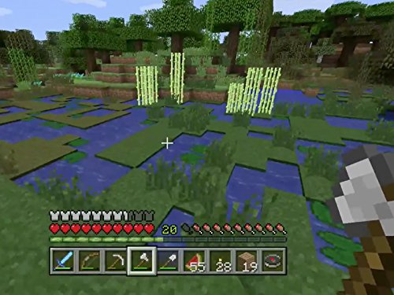
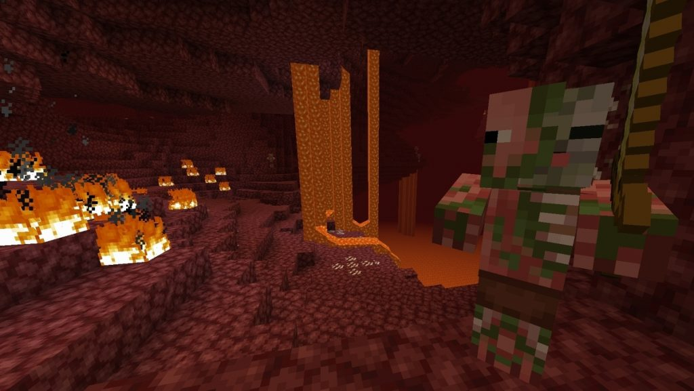
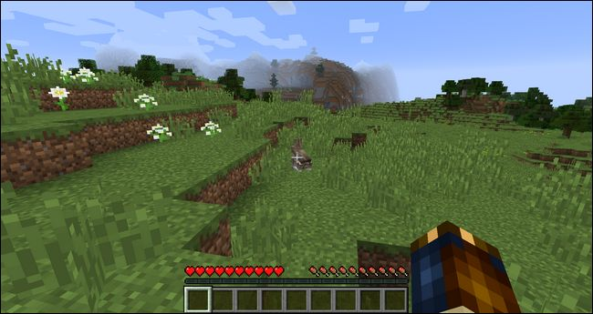

Minecraft
> by Blog Xoupedia
> July 18, 2022
> Edukasi

Minecraft adalah sebuah permainan sandbox yang dikembangkan oleh pengembang permainan asal Swedia Mojang Studios. Permainan ini dibuat oleh Markus "Notch" Persson dalam bahasa pemrograman Java.
Setelah beberapa versi pengujian pribadi awal, permainan ini pertama kali diterbitkan pada Mei 2009 sebelum sepenuhnya dirilis pada November 2011, kemudian Jens "Jeb" Bergensten mengambil alih pengembangan. Permainan ini adalah salah satu yang terlaris sepanjang masa, terjual lebih dari 238 juta kali dan dengan lebih dari 140 juta pemain aktif bulanan.
Di Minecraft, pemain menjelajahi dunia 3D kotak-kotak dengan bioma Minecraft beragam yang dihasilkan secara prosedural, dan dapat menemukan dan membuat dari bahan baku, alat kerajinan, membangun struktur atau pekerjaan tanah, tergantung pada mode permainan, dapat melawan musuh yang dikendalikan oleh komputer, dan juga bekerja sama atau bersaing dengan pemain lain di dunia yang sama.
Mode permainan dalam Minecraft termasuk mode bertahan hidup, di mana pemain harus mendapatkan sumber daya untuk membangun dunia dan menjaga kesehatan, dan mode kreatif, di mana pemain memiliki sumber daya tanpa batas. Pemain dapat memodifikasi game dengan mod untuk membuat mekanisme, item, tekstur, add-ons, dan aset alur permainan baru.
Versi-versi awal permainan ini mendapat tanggapan secara positif, memenangkan beberapa penghargaan dan disebut sebagai salah satu permainan video terbaik yang pernah ada. Sosial media, parodi, adaptasi, barang dagangan, dan Minecon yang diselenggarakan tiap tahun memiliki peran besar dalam kepopuleran permainan ini. Minecraft juga digunakan dalam lingkungan edukasi untuk mengajarkan Kimia, CAD, dan ilmu komputer. Pada 2014, Mojang dan properti intelektual
Minecraft dibeli Microsoft seharga US$2,5 miliar. Sejumlah game spin-off juga telah dikembangkan, seperti Minecraft: Story Mode, Minecraft Earth, dan Minecraft Dungeons.
Game Minecraft (Gameplay)
Game ini sebenarnya tidak memiliki objek khusus atau dengan kata lain tidak ada endingnya.
Berbeda dengan kebanyakan game lain dengan tema open world dimana terdapat alur cerita yang dapat diikuti dan berkembang sesuai dengan lamanya permainan.

Walaupun demikian kamu dapat melakukan banyak hal, karena game satu ini memiliki berbagai hal yang membuatnya sangat kompleks. Kebanyakan player akan menghabiskan waktunya untuk membuat rumah atau kediaman khusus dengan berbagai perlengkapan, jebakan dan perabotan.
Bangunan yang dibangun cukup beragam dan beberapa diantaranya sangat indah. Namun, bangunan ini dapat dihancurkan oleh player lain yang iseng. Jadi, usahamu dapat hangus sia-sia karena hal ini.
Tapi, kamu bisa melakukan hal lain seperti explore dunia minecraft, mencari item ataupun mengalahkan monster dan lawan. Walaupun tampilannya sederhana game ini menyediakan berbagai area berbeda seprti gurun pasir, padang salju ataupun hutan. Jadi, kamu tidak akan bosan menjelajahi dunia minecraft.
Mobs
Makhluk hidup pada game minecraft dikenal dengan nama mobs. Setiap mobs memiliki ciri khas masing-masing, tapi terdapat dua pembagian dasar yaitu hostile (jinak) dan berbahaya.
Hostile mobs hanya muncul pada siang hari sedangkan yang berbahaya biasanya muncul pada malam hari. Karena alasan inilah kamu harus membangun rumah untuk menghindari mobs-mobs berbahaya tersebut.
Mobs jinak biasanya berupa NPC yang ada di desa, sapi, ayam atau hewan lainnya. Mobs seperti hewan ternak dapat diburu untuk diperoleh daging dan craft material. Makanan sangat dibutuhkan pada game ini karena terdapat health dan stamina bar yang dapat berkurang sewaktu-waktu.
Mobs berbahaya ini biasanya berupa zombie, slime, creeper, laba-laba dan lainnya. Mobs tipe ini sangat berbahaya karena jika terkena serangan terus menerus maka karakter yang kamu pakai akan cepat mati.
Dunia Pada Game Minecraft
Minecraft merupakan game yang memiliki tingkat kesulitan tersendiri. Karena itu dibutuhkan pengetahuan agar kamu dapat bertahan dan berhasil melewati berbagai dunia yang ada pada game ini.

Setidaknya terdapat tiga dunia pada minecraft yang harus kamu lewati jika ingin menuju area tertentu. Adapun dunia tersebut adalah:
Overworld
Dunia satu ini merupakan dunia awal ketika baru memainkan game ini. Pada dunia kamu hanya memiliki tujuan untuk bertahan hidup dan menjelajahi overworld.
Nether
Dunia ini merupakan neraka versi minecraft. Nether atau dunia bawah/ neraka memiliki tantangan yang lebih tinggi dari overworld. Karena, mobs berbahaya dapat muncul kapan saja untuk menyerang.
The End
Dunia ini merupakan puncak kesulitan pada minecraft. Karena di dunia ini kamu dapat menghadapi Enderman ataupun Enderdragon (semacam boss dalam game). Setelah mengalahkan Enderdragon kamu bisa memilih untuk mengunjungi endcity, endship untuk memperoleh Elytra.
Memasuki dunia berikutnya tidaklah mudah, karena kamu harus mempersiapkan banyak hal seperti senjata, armor, persediaan dan item lainnya. Selain itu kamu harus menemukan spot tertentu untuk membangun rumah yang aman dari serangan mobs berbahaya.
Mode Permainan Game Minecraft

Selain dunia, game minecraft juga menyediakan berbagai mode yang dapat kamu mainkan. Setiap mode memiliki kriteria dan tingkat kesulitan tersendiri. Adapun mode yang ada adalah sebagai berikut:
-
Survival mode, disini kamu bertujuan untuk bertahan hidup dengan mengumpulkan item, membuat senjata, armor dan bangunan pertahanan.
-
Adventure Mode, mode ini memiliki ciri khas dimana kamu hanya bisa menggunakan peralatan tertentu untuk menghancurkan sesuatu. Contohnya saja kapak untuk memotong kayu dan palu untuk menghancurkan batu.
-
Hardcore Mode, mode ini cukup ekstrem dimana karakter kamu hanya memiliki satu nyawa dan jika mati maka dunia yang ada akan dihapus.
-
Creative Mode, sesuai dengan namanya pada mode ini kamu dapat melakukan berbagai hal untuk crafting item sepuasnya. Karena itu kamu dapat membunuh mobs hewan dan memiliki item dalam jumlah tak terhingga.
-
Spectator Mode, atau yang biasa dikenal dengan mode penonton. Dimana kamu bisa menjelajahi dunia minecraft tanpa harus berinteraksi secara langsung di dalamnya.
Game minecraft sangatlah kompleks dan menantang walaupun dibungkus dalam grafis yang sangat sederhana. Kamu akan menemukan efek siang dan malam pada game ini layaknya di dunia nyata. Selain itu terdapat berbagai item istimewa yang bisa diperoleh dengan eksplor dunia minecraft.